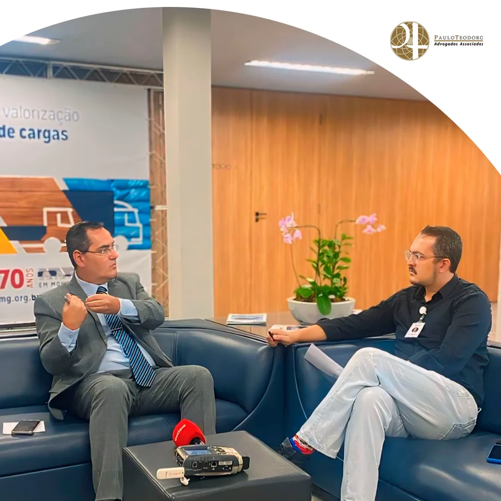
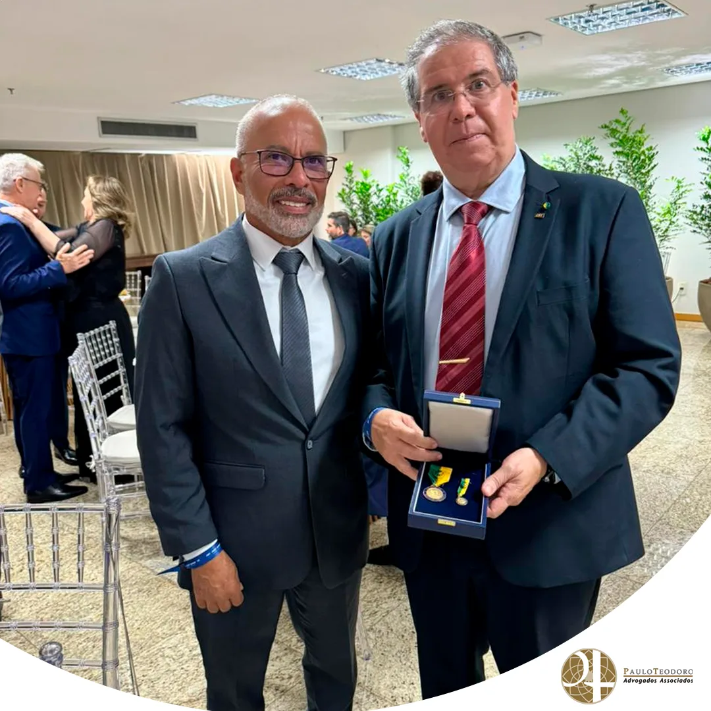

Conteúdos
Eventos
Palestras, treinamentos, negociações coletivas e participação em entidades.
 Evento
EventoManifesto de Minas pela Constituição, pela Justiça e pela República
O escritório Paulo Teodoro Advogados Associados manifesta seu apoio ao Manifesto de Minas pela Constituição, pela Justiça e pela República…
 Evento
EventoSETCEMG homenageia Dr. Paulo Teodoro pelos 30 anos de atuação em defesa do Transporte Rodoviário de Cargas
O escritório Paulo Teodoro Advogados Associados recebeu com muita honra a homenagem prestada pelo Sindicato das Empresas de Transportes de…
 Evento
EventoPaulo Teodoro Advogados Associados promove momento especial em homenagem ao Dia da Mulher
O escritório Paulo Teodoro Advogados Associados realizou, no dia 06 de março, um momento especial de celebração e integração em homenagem…
 Evento
EventoDr. Jeferson Costa participa da II Conferência Nacional do Trabalho representando o transporte de cargas de Minas Gerais
Entre os dias 3 e 5 de março de 2026, foi realizada, em São Paulo, a II Conferência Nacional do Trabalho (II CNT), evento promovido pelo…
 Evento
EventoDr. Jeferson Costa participa de reunião da Comissão de Direito Sindical da OAB/MG
No dia 26 de fevereiro de 2026, às 18h, o sócio do Paulo Teodoro Advogados Associados, Jeferson Costa, participou da reunião ordinária da…
 Evento
EventoSustentabilidade e Incentivos Fiscais: o Futuro Tributário do Transporte Verde
O setor de transporte de cargas é um dos pilares da economia nacional, essencial para a circulação de bens e para o desenvolvimento…
 Evento
EventoSócios do escritório Paulo Teodoro Advogados Associados participam do Fórum Jurídico de Lisboa e acompanham debates sobre o futuro do Direito, infraestrutura e sustentabilidade
Entre os dias 2 e 4 de julho, foi realizada, em Portugal, a 13ª edição do Fórum Jurídico de Lisboa — um dos mais importantes encontros…
 Evento
EventoParticipação do Dr. Paulo Teodoro no IV Seminário Trabalhista do Transporte Rodoviário de Cargas é reconhecida pela NTC&Logística
No dia 11 de junho de 2025 , o fundador do Paulo Teodoro Advogados Associados, Dr. Paulo Teodoro , participou como palestrante do IV…
 Evento
EventoSócios do escritório Paulo Teodoro Advogados Associados participam da 13ª edição do Fórum Jurídico de Lisboa
Entre os dias 2 e 4 de julho de 2025 , os sócios do Paulo Teodoro Advogados Associados, Dr. Jeferson Costa e Dr. Reinaldo Teodoro , estarão…
 Evento
EventoTreinamento Online – Ações Indenizatórias contra transportadoras: Como Reduzir Riscos e Evitar Condenações
O curso é uma parceria do escritório Paulo Teodoro Advogados Associados com o SETCEMG . Essa treinamento tem o objetivo de capacitar…
Treinamento Online: Conhecimento de Transporte Eletrônico CTe e Manifesto Fiscal Eletrônico MDFe
Domine os principais aspectos jurídicos e operacionais do CT-e e do MDF-e! Este treinamento foi desenvolvido para capacitar profissionais…
 Evento
EventoTreinamento Online: ICMS no Transporte de Cargas
Atualize-se sobre a Legislação do ICMS no Transporte Rodoviário de Cargas! No setor de transporte rodoviário de cargas (TRC), estar em dia…
 Evento
EventoTreinamento Online: Gestão da Jornada do Motorista – STF
Adeque a operação, os custos e o faturamento da sua empresa à legislação, evitando passivos trabalhistas e fiscais! Com as constantes…
 Evento
EventoPlanejamento Tributário com Foco no Transporte Rodoviário de Cargas – Treinamento Online
Atualize-se e Otimize os Processos Tributários da Sua Empresa! A gestão tributária eficiente é crucial para a sustentabilidade e…
 Evento
EventoProcedimento de Cobrança e Recuperação de Créditos – Treinamento Online
Você deseja aumentar a performance da sua empresa? O escritório Paulo Teodoro Advogados Associados , em parceria com o SETCEMG , convida…
 Evento
EventoCafé com Palestra – Alto Paranaíba/MG
No dia 25 de junho de 2024, foi realizado o primeiro Café com Palestra do SETCEMG na unidade do Alto Paranaíba, em parceria com o nosso…
 Evento
EventoCafé com Palestra: Convenção Coletiva de Trabalho 2024/2025
Na última sexta-feira, 21 de junho, o escritório Paulo Teodoro Advogados Associados , em parceria com o SETCEMG , realizou um evento…
 Evento
EventoCafé com Palestra: Convenção Coletiva 2024-2025
O escritório Paulo Teodoro Advogados Associados , em parceria com o SETCEMG , convida você para um evento imperdível. Neste encontro, vamos…
 Evento
EventoPrograma Emprega Mais Mulheres – Lei 14457/22 e sua Aplicação Correta e Medidas de Prevenção e Combate ao Assédio Moral e Sexual
No dia 19 de junho, realizaremos um treinamento essencial para todos que desejam compreender melhor a Lei 14.457/22, conhecida como o…
 Evento
EventoPIS/COFINS no Transporte Rodoviário de Cargas – Aspectos Legais com Ênfase nos Créditos
No dia 13 de junho, o escritório Paulo Teodoro Advogados Associados, em parceria com o SETCEMG, acontecerá o treinamento voltada para o…
 Evento
EventoParticipação na Reunião de Negociação Coletiva NTC em Brasília
No último mês, nossos sócios, Dr. Jeferson Oliveira e Dr. Reinaldo Lage, participaram ativamente da reunião de negociação coletiva…
 Evento
Evento23ª Edição do Seminário Brasileiro de Transporte Rodoviário de Cargas
No último dia 8 de maio, o auditório Nereu Ramos, em Brasília (DF), foi palco da 23ª edição do Seminário Brasileiro de Transporte…
Treinamento online: Principais Multas de Trânsito no Transporte Rodoviário de Cargas
Sua empresa está preparada para evitar multas de trânsito no transporte rodoviário de cargas? No dia 15 de maio, nosso advogado…
 Evento
EventoCafé com Palestra: Novo Projeto de Lei 68/2024 em Destaque
No próximo dia 15, às 8h, o Sindicato das Empresas de Transporte de Carga de Minas Gerais (SETCEMG) promoverá o Café com Palestra em sua…

EventoExame Toxicológico para Motoristas Profissionais: Prazos e Consequências
No dia 29 de abril, o nosso sócio Dr. Jeferson Oliveira, também assessor jurídico do SETCEMG (Sindicato das Empresas de Transporte de…
 Evento
EventoEstratégias para evitar passivos trabalhistas na contratação de motoristas autônomos
No mundo dos transportes, as empresas enfrentam constantes desafios para garantir que suas operações sejam eficientes e, ao mesmo tempo…
 Evento
EventoDr. Paulo Teodoro debate sobre o futuro do transporte rodoviário de cargas em seminário nacional
No dia 12 de abril, o nosso Sócio Diretor, Dr. Paulo Teodoro , teve a honra de participar do Seminário Itinerante Nacional, a convite do…
 Evento
EventoComo reduzir demandas judiciais em cobrança e recuperação de crédito: Lições de um Curso Especializado
No mundo dos negócios, lidar com questões de cobrança e recuperação de crédito pode ser desafiador e muitas vezes resultar em demandas…
 Evento
EventoDesvendando os Impactos do ICMS no Transporte Rodoviário de Cargas: Uma Análise Abrangente
Você está por dentro de todos os efeitos do ICMS no transporte rodoviário de cargas? No dia 10 de abril, o Dr. Reinaldo Lage, renomado…
 Evento
EventoA Importância da LGPD no Setor de Transporte: Protegendo Dados em Movimento
No mundo onde a tecnologia desempenha um papel fundamental em todas as esferas da vida, a proteção de dados se tornou uma preocupação…

EventoDr. Paulo Teodoro Celebra Excelência no Setor de Transporte Brasileiro em Cerimônia da Medalha JK.
No dia 13 de março, nosso Sócio Diretor, Dr. Paulo Teodoro , teve o privilégio de participar da cerimônia de entrega da Medalha JK – Ordem…
 Evento
EventoCurso – Multas de Trânsito – On-line
22 de Março 2022 ás 14:00 EVITE AS MULTAS! MAS EM CASO DE NOTIFICAÇÕES SAIBA AS POSSIBILIDADES DE DEFESA/RECURSOS NESTA CAPACITAÇÃO…
 Evento
EventoCurso – PIS/COFINS no Transporte de Cargas – On-line
15 de Março de 2022 as 08:30 O curso aborda conceito e aspectos legais das contribuições de PIS e COFINS para o setor de transportadora…
 Evento
EventoProcedimento de Cobrança e Recuperação de Crédito – On-line
6 de Fevereiro 2022 ás 13:30 Com conceitos e aplicações práticas, os participantes conhecerão abordagens sobre a forma correta de cobrança…
 Evento
EventoCurso – Contratação de Motorista Autônomo
26 de Novembro 2021 ás 09:00 OBJETIVO Fornecer conceitos e requisitos legais sobre o Transportador Autônomo de Cargas previstos nas Leis…
 Evento
EventoCurso – Conhecimento de Transporte Eletrônico CTe e Manifesto Fiscal Eletrônico MDFe
16 de Novembro de 2021 ás 08:30 OBJETIVO Apresentar aos participantes as principais regras jurídicas do CT-e e do MDF-e. CONTEÚDO…
 Evento
EventoCurso – ICMS no Transporte Rodoviário de Cargas
21 de Agosto de 2021 ás 08:30 OBJETIVO O curso abordará conceitos e aspectos legais do ICMS para o setor de transporte rodoviário de…
EventoCurso – Conhecimento de Transporte Eletrônico CTe e Manifesto Fiscal Eletrônico MDFe
13 de Agosto 2021 ás 08:30 DATA: 13/08/2021 ás 08:30 OBJETIVO Apresentar aos participantes as principais regras jurídicas do CT-e e do…
EventoCurso – Tabela de Fretes: Normas e regulamentos e situação atual
21 de maio de 2019 OBJETIVO: Abordagens sobre as Leis e Resoluções que tratam da Tabela de Fretes e infrações aplicáveis. PÚBLICO ALVO…
EventoLei de repatriação de recursos não declarados por brasileiros no exterior
04 de fevereiro, 2016 No dia 13/01/16 foi publicada a Lei 13.254, que cria o Regime Especial de Regularização Cambial e Tributária – RERCT…